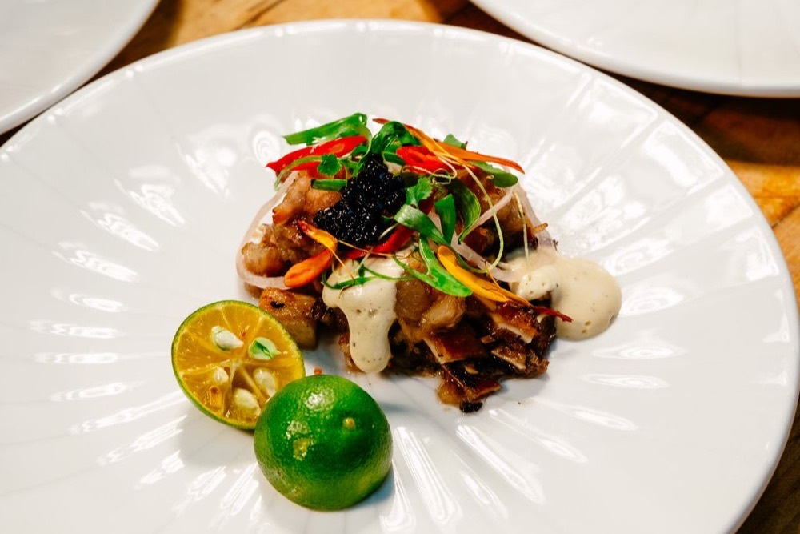

The Global Rise of Filipino Food
Why Filipino cuisine is finally getting the worldwide recognition it has always deserved
By Sam · Published May 1, 2026

The Long Wait
For decades, a recurring conversation in Filipino food culture went something like this: "Why isn't Filipino food more internationally recognized? It's extraordinary. Why does Thai food, Vietnamese food, Japanese food fill restaurants in every major city while Filipino food remains almost invisible outside of Filipino communities?" This question was asked with genuine frustration by Filipino chefs, food writers, and food lovers around the world, and it didn't have a satisfying answer.
The situation has changed dramatically in recent years. Filipino food is now having what food media has taken to calling its "moment" — a wave of international recognition, critical attention, and genuine cultural curiosity that shows every sign of being structural rather than temporary. Understanding why this is happening now, and what it means for Filipino culinary culture, requires looking at several converging forces.
The Filipino Diaspora as Cultural Ambassadors
The Filipino diaspora is one of the largest in the world, with an estimated 10-12 million Filipinos living outside the Philippines across more than 100 countries. For decades, this diaspora fed itself from home — maintaining Filipino cooking traditions in foreign kitchens, creating Filipino grocery networks in cities from Los Angeles to Riyadh to Milan, and passing those traditions to second and third generations born abroad. The food stayed within Filipino communities not because it wasn't worth sharing but because the infrastructure for sharing it wasn't there.
The second-generation Filipino-American chef cohort that emerged in the 2010s changed this. Chefs who grew up eating Filipino food at home and trained in American or European culinary traditions began opening restaurants that presented Filipino flavors through a fine-dining or chef-driven lens — not replacing the home cooking but creating a context in which non-Filipino diners could encounter Filipino food in settings they were comfortable with. This was not Filipinos "elevating" their cuisine for a Western audience. It was Filipino-American chefs using the full toolkit of contemporary restaurant culture to present what was always great about Filipino cooking to people who hadn't grown up with it.
Michelin Attention and Critical Recognition
The Michelin Guide's expansion into new cities and countries brought Filipino cuisine into a global critical conversation that had previously excluded it. Filipino restaurants in major Western cities began receiving recognition that placed them in the company of the most celebrated restaurants worldwide. This critical validation mattered because it sent a signal to the global food media and the food-curious public: Filipino food is worth your serious attention.
Beyond Michelin, food awards, "best new restaurant" lists, and influential food publications began featuring Filipino restaurants and Filipino-American chefs with increasing frequency. Chefs who had been cooking Filipino food for years — to loyal Filipino communities and a small number of adventurous non-Filipino diners — suddenly found themselves with waiting lists and national press coverage. The food hadn't changed. The audience had expanded.
Sinigang and the Taste Atlas Effect
When Taste Atlas named Sinigang the world's best vegetable soup in 2021, the announcement went viral across Filipino social media and diaspora communities worldwide. The collective pride was enormous — and the reaction revealed just how long Filipino food lovers had been waiting for this kind of international acknowledgment. What followed was a measurable increase in search interest for "Sinigang" in countries where Filipinos are a diaspora minority, as Filipino community members shared the news and non-Filipino friends, curious, searched for more information.
The Taste Atlas recognition also demonstrated something important about how food recognition works in the digital age: a single authoritative ranking, shared widely on social media, can do in days what decades of critical attention could not. Filipino food had always deserved the recognition; the mechanism for delivering that recognition to a global audience had finally arrived. Since the 2021 Sinigang award, Filipino dishes have continued to appear on Taste Atlas rankings, and the cumulative effect has been to establish Filipino cuisine in the global food consciousness in ways that persist beyond any single viral moment.
Jollibee and the Global Fast Food Front
While fine dining recognition matters for cultural prestige, the global expansion of Jollibee — the Philippines' beloved fast food chain — has done something different: it has made Filipino food accessible and familiar to mass audiences worldwide. Jollibee now operates in over 30 countries, with locations across the United States, Canada, the United Kingdom, Italy, Singapore, and the Middle East. The queues at new Jollibee openings in cities with large Filipino diaspora populations became, themselves, a kind of news story — evidence of the intense emotional attachment Filipinos abroad have to food from home, and of the genuine curiosity non-Filipino locals showed for what was causing such enthusiasm.
Jollibee's menu — the Chickenjoy fried chicken, the spaghetti with a sweet tomato-meat sauce, the peach-mango pie, the palabok — is not high cuisine. But it's the taste of home for millions of Filipinos, and its global expansion has created physical locations where Filipino flavors are present in cities where Filipino restaurants might otherwise be absent. The Jollibee effect is scale; the fine-dining effect is prestige. Both are part of how Filipino food is establishing itself globally.
The Ube Revolution
If any single Filipino ingredient has had the most dramatic impact on global food culture in recent years, it's ube — the purple yam whose vivid violet color and sweet, slightly nutty flavor has appeared on menus, in products, and in food photography worldwide. Ube ice cream, ube lattes, ube cheesecake, ube donuts, ube bread — the ingredient crossed over from Filipino specialty stores into mainstream cafes and bakeries with a speed that reflects both its visual distinctiveness (the purple color is inherently photogenic and therefore social-media-ready) and its genuinely appealing flavor profile.
The ube moment is interesting because it happened partly through Filipino-American businesses that made ube-based products for non-Filipino audiences, and partly through the mainstream food industry recognizing a trend and following it. Both dynamics are evidence of Filipino food's growing cultural presence. The fact that many non-Filipinos now know what ube is — even if they don't know its Filipino origins — represents a form of quiet cultural infiltration that is in some ways more powerful than formal recognition.
Filipino Chefs on the World Stage
The individual chefs who have driven Filipino food's global recognition deserve recognition themselves. Filipino-American chefs have appeared on competitive cooking shows, won prestigious culinary awards, published influential cookbooks, and opened restaurants that have become destinations. Filipino chefs working in the Philippines — both in Manila's restaurant scene and in the regional traditions of Pampanga, Cebu, Bicol, and Ilocos — have been featured in international food media with increasing frequency, bringing attention to the regional diversity of Filipino cuisine that the diaspora-driven narrative sometimes obscures.
The cookbook surge is particularly significant. Multiple major Filipino cookbooks published in the last decade have brought Filipino recipes, food history, and food culture into English-speaking homes that might never have visited a Filipino restaurant. Cookbooks by Filipino-American authors have won major culinary book awards and appeared on mainstream bestseller lists. This means Filipino food is entering home kitchens — the deepest form of cultural transmission — alongside its restaurant presence.
What Global Recognition Means for Filipino Food Culture
The global rise of Filipino food is not without complexity. As Filipino cuisine enters mainstream food culture, there are questions about how its flavors, traditions, and regional diversity are represented — whether the versions of Filipino food that achieve global recognition accurately reflect the breadth of the cuisine or flatten it into a few recognizable dishes. The concern is familiar from the global spread of other Asian cuisines: the risk that one version (often the one most legible to non-Asian palates) becomes the representative version, overshadowing the enormous variety that exists within the tradition.
Filipino food advocates and chefs are aware of this tension. The most thoughtful participants in Filipino food's global moment are those who insist on bringing regional specificity, historical context, and the full complexity of the cuisine with them as they reach wider audiences — not simplifying Filipino food to make it more approachable but trusting that audiences are ready for its actual depth.
For this site, Filipino food's global rise is the context in which we built the Pinoy Food Personality Test. We wanted to participate in that moment of recognition by connecting Filipino cuisine's 16 most iconic dishes to the personality frameworks that millions of people worldwide already use to understand themselves. The best way to introduce a cuisine is through personal connection — to say not just "this food is good" but "this food is you." That's what Filipino food culture has always known, and what the world is now beginning to discover.
About the author
Sam is Korean, a former MBTI skeptic, and the person who built this site. Not a professional chef or a food historian — an enthusiast who cooks the dishes, does the reading, and cross-checks the history against documented Philippine culinary sources. Corrections are welcome and get made. Read the full story.